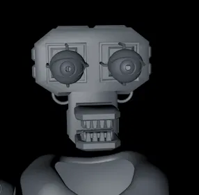

CH 02 · EN DESARROLLO · DESDE 2021
Donnie's Origins
Fangame de terror analógico inspirado en FNaF, hecho en Source Engine. Un universo propio con dos juegos en el mismo canon: Remastered y The Underground.
CH 01 · EMITIENDO DESDE EL TALLER
Juegos, programas, sistemas operativos, arte digital e historias. Un estudio independiente fundado por KCRooty (Core), abierto a quien quiera sumarse.
Código abiertoSin anunciosSin telemetría
GUÍA DE PROGRAMACIÓN
Juegos, herramientas y sistemas. Cada canal es un proyecto, con su estado real.

Fangame de terror analógico inspirado en FNaF, hecho en Source Engine. Un universo propio con dos juegos en el mismo canon: Remastered y The Underground.
Five Nights at Freddy's Alternative Stories: antología fan de glitch y terror analógico, con lore propio y renders 3D.
Ficción original de largo recorrido, desde 2020: personajes, mundo y trama propios.
App Android libre al estilo Rufus y Ventoy: grabar ISOs, USB multiarranque UEFI y particiones desde el móvil. Gratis, sin anuncios. Necesita root.
Optimizador de Windows 10 y 11 donde cada ajuste se puede deshacer: copia del registro antes de cada cambio y catálogo firmado.
Descargador de escritorio para YouTube, YouTube Music, Spotify y Pinterest, construido sobre yt-dlp y spotdl.
Una ISO de Windows 11 limpia, sin bloatware y con identidad propia desde el primer arranque.
Distro basada en Arch. sl-detect mira tu hardware y elige el escritorio adecuado, de Openbox a Hyprland. La primera ISO ya arranca e instala de principio a fin.
Un sistema operativo completo escrito desde cero en Rust: kernel propio para x86_64 y userland propio (Ember, Bellows, Crucible y Anvil).
Launcher propio para Minecraft Java. Cada instancia guarda sus mods, partidas y opciones, y la lista de instancias y las noticias llegan en directo desde su servidor.
EL ESTUDIO
Static Forge es el estudio detrás de todo lo que ves aquí: juegos, programas, sistemas operativos, arte e historias. Lo fundó KCRooty (Core), y la puerta está abierta.
KCRooty (Core) programa, modela en 3D, dibuja y escribe, pero el estudio no es cosa de una sola persona: cualquiera con ideas o con un proyecto propio puede sumarse. Se habla català, castellano e inglés.
CRÉDITOS
OWNER
INTEGRANTES
ARCHIVO DE IMAGEN
SE BUSCA GENTE
Siempre hay sitio para ideas, colaboraciones y gente que quiera formar parte del estudio, venga del ámbito que venga. Tus proyectos también se publican y se distribuyen bajo Static Forge.
CONTACTO StaticForge (arroba) proton.me
SOLICITUD
Cuéntanos quién eres, qué haces y qué te gustaría hacer en el estudio, en sus proyectos o con uno tuyo. Lleva unos cinco minutos. Si te interesa Static Linux o Forge OS en concreto, tienen su propia solicitud en Static Linux y en Forge OS.